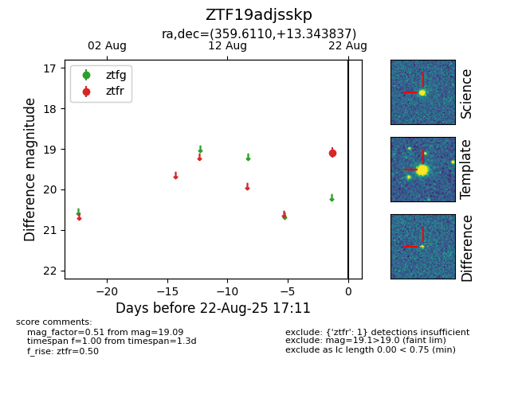

Target ZTF19adjsskp at 2025-08-22 17:21, see:
FINK: fink-portal.org/ZTF19adjsskp
Lasair: lasair-ztf.lsst.ac.uk/objects/ZTF19adjsskp
ALeRCE: alerce.online/object/ZTF19adjsskp
alt names
ZTF19adjsskp (ztf,alerce)
coordinates:
equatorial (ra, dec) = (359.6110,+13.34384)
galactic (l, b) = (103.6465,-47.53374)
photometry
last ztfr=19.09
1 ztfr detections
